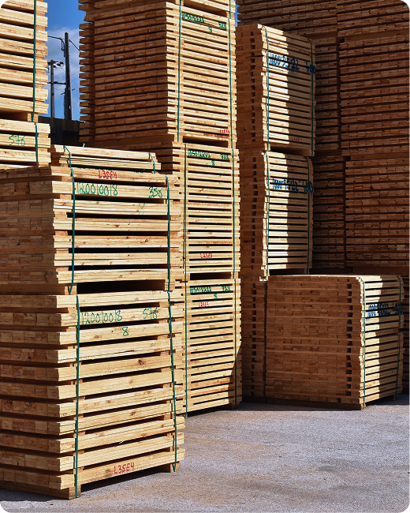
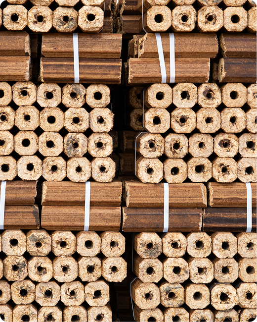
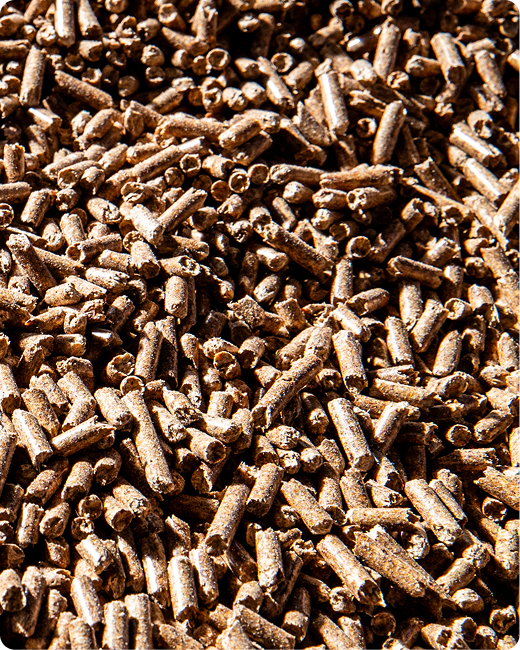
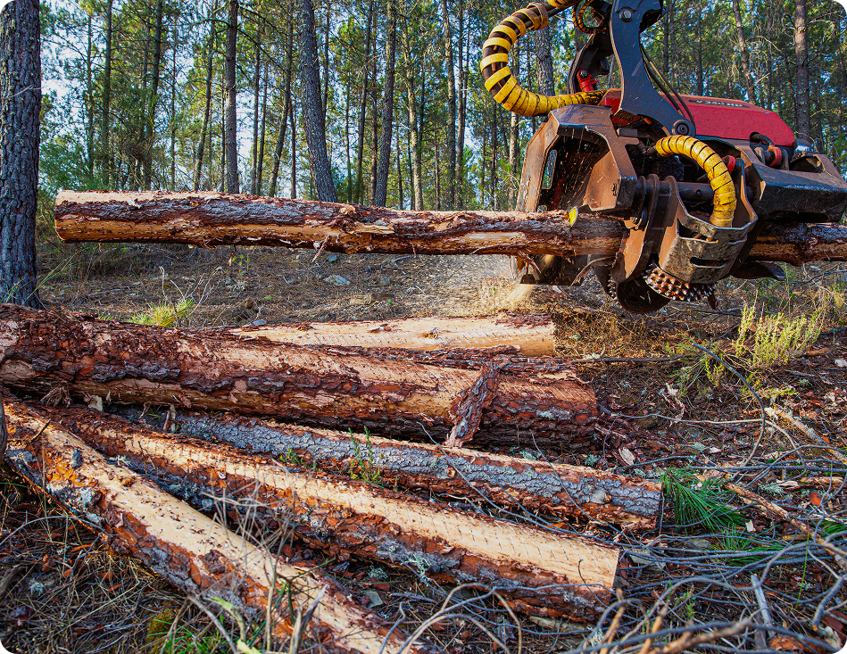
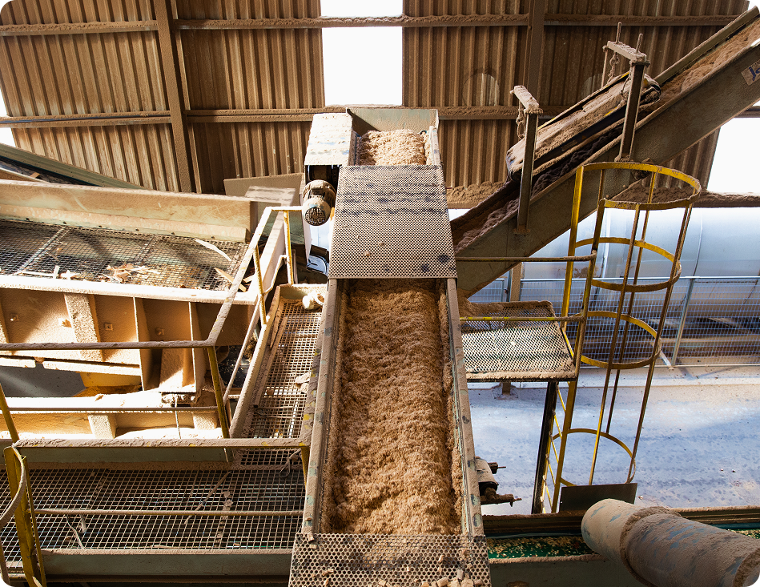
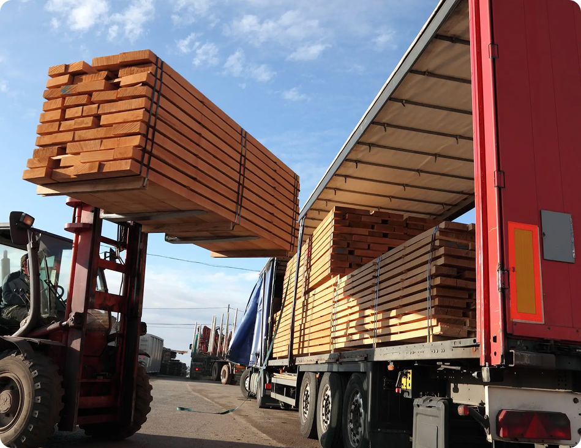
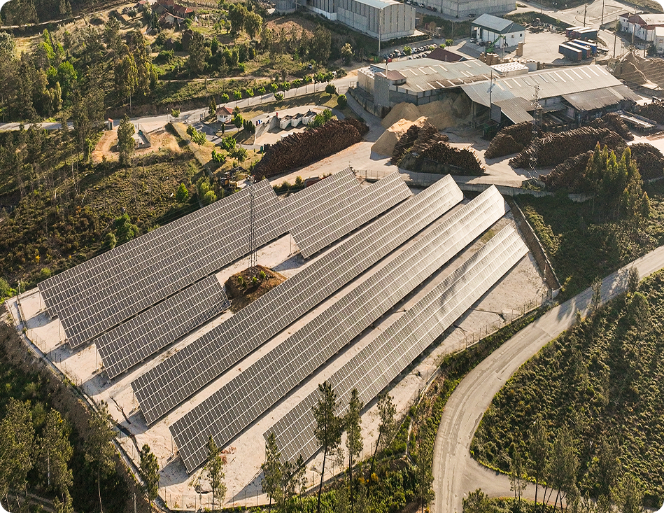

A qualidade dos nossos produtos resulta de um conjunto de
serviços que sustentam toda a cadeia de valor. Exploração
florestal, indústria, energia e transportes são os pilares que
garantem eficiência e sustentabilidade em cada etapa do
processo.

A empresa adquire as árvores aos produtores florestais, que manifestem interesse em vender. Após o contacto por parte dos proprietários, é enviado um responsável por esta actividade, que avalia e celebra os contratos para aquisição das mesmas.
Este processo fica concluído, quando a operação de corte, rechega e transporte das árvores termina, respeitando sempre as regras mais elementares, tanto ambientais como comerciais.
Caso seja proprietário, e esteja interessado em vender as suas árvores, poderá contactar-nos, para que lhe seja apresentada uma proposta comercial.

A área industrial é um dos pilares da atividade da JAF. Com unidades produtivas modernas e tecnologicamente equipadas, a empresa dedica-se à transformação da madeira em produtos de elevada qualidade, como madeira serrada, pellets e briquetes. Todo o processo industrial é orientado para a eficiência e para o aproveitamento integral da matéria-prima, reduzindo desperdícios e valorizando os subprodutos resultantes da produção. A aposta contínua na modernização dos equipamentos e na melhoria dos processos permite garantir elevados padrões de qualidade, responder às exigências do mercado e reforçar a competitividade da empresa a nível nacional e internacional.

A JAF dispõe de uma frota própria de camiões que assegura o transporte eficiente das matérias-primas e a distribuição dos produtos acabados. Esta capacidade logística interna permite maior controlo dos prazos, flexibilidade operacional e elevados padrões de segurança. Paralelamente, a empresa presta serviços de transporte de mercadorias a terceiros, otimizando rotas e recursos de forma a reduzir custos e o impacto ambiental. A gestão cuidada da frota e a experiência das equipas garantem um serviço fiável, adaptado às necessidades de cada cliente.

O negócio de combustíveis integra a oferta de serviços do grupo JAF, assegurando o fornecimento regular e fiável de combustíveis a clientes particulares e empresariais. Esta área caracteriza-se pela proximidade ao cliente, pelo cumprimento rigoroso das normas de segurança e pela qualidade do serviço prestado. A atividade de comercialização de combustíveis complementa as restantes áreas do grupo, respondendo a necessidades energéticas essenciais e contribuindo para o desenvolvimento económico da região onde a empresa está inserida.
A produção de energia é uma área estratégica para a JAF, alinhada com o seu compromisso com a sustentabilidade e a transição energética. Atualmente, a empresa produz energia limpa através de duas centrais fotovoltaicas, destinadas ao autoconsumo das unidades industriais, contribuindo para a redução da dependência energética externa e da pegada de carbono. Em paralelo, a JAF está a preparar o futuro, desenvolvendo soluções que permitirão, a médio prazo, a produção de energia a partir de biomassa, reforçando a eficiência energética e a sustentabilidade global das suas operações.
Ao longo dos anos temos assistido a uma crescente sensibilização para a consciencialização das empresas e da população para os mais variados factores ambientais.
É com esta preocupação que na José Afonso & Filhos segue um conceito de desenvolvimento sustentado que interliga o desenvolvimento económico e a necessidade de preservação dos recursos naturais. Tudo isto se reflecte na capacidade de adaptação das empresas às novas exigências, principalmente de quem desenvolve o seu negócio ao nível da exploração dos recursos florestais.
Confinanciado por: